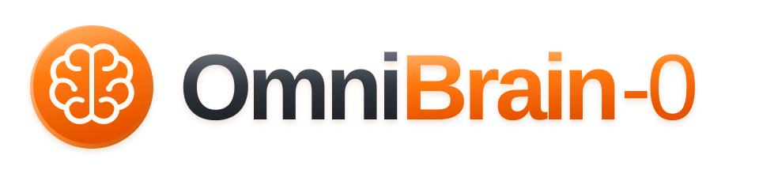

LIBERO-Pro
X-VLA
3.8
π0.5
43.8
GLM-5.3-Flash
64.9
GPT-5.6-Sol
78.3
OmniBrain-0 · 9B
65.5
OmniBrain-0 · RSI
69.3

OmniBrain-0 brings manipulation and navigation into one learned decision model. It interprets instructions, coordinates specialist skills, tracks task progress, and revises its plan from execution feedback.

Available in 4B and 9B sizes, the shared brain builds on specialist controllers while learning when and how to use their skills. The RSI data flywheel turns verified successes and recovery trajectories into training experience for the next round.
Follow the agent’s decisions across manipulation, household tasks, and indoor navigation.
 OBSERVATION 01 / 08
OBSERVATION 01 / 08MANIPULATION · FAILURE RECOVERY
STEP 01 — GROUND THE TASK
Localize the moka pot and the stove, then approach the pot.
observe_state() → localize_pixels() → move_arm()One shared brain is evaluated on LIBERO-Pro, LIBERO-Plus, RoboCasa365, RoboTwin 2.0, and R2R-CE.
Task success rate (%). LIBERO-Plus reports Total; R2R-CE reports SR on the Val-Unseen rand100 subset. RSI denotes the model updated through the data flywheel.
| Benchmark | 4B | 9B | RSI iteration |
|---|---|---|---|
| LIBERO-Pro | 62.4 | 65.5 | 69.3 |
| LIBERO-Plus | 82.3 | 83.8 | 84.5 |
| RoboCasa365 | 33.6 | 39.6 | 43.2 |
| RoboTwin 2.0 | 87.2 | 88.2 | 89.4 |
| R2R-CE | 55.0 | 65.0 | 66.0 |
Three stages connect embodied knowledge, domain expertise, and cross-domain learning.

Build spatial, task, and interaction knowledge from embodied question answering and agent data.
Learn manipulation and navigation decisions from verified successes and successful recoveries.
Bring both experts into one student with multi-teacher on-policy distillation (MOPD).
The RSI data flywheel turns execution feedback and verified trajectories into model updates.

Collected successes, failures, and inefficient attempts reveal execution challenges. Verified successes and recovery trajectories update the domain experts, which are consolidated into the shared brain for the next collection round.
Physical robot evaluation includes block stacking, apple placement, and drawer opening.

@techreport{omnibrain0_2026,
title = {OmniBrain-0: A Unified Agentic Model for Embodied Intelligence},
author = {{Xiaomi Embodied Intelligence Team}
and {Tsinghua University} and {University of Macau}},
year = {2026}
}